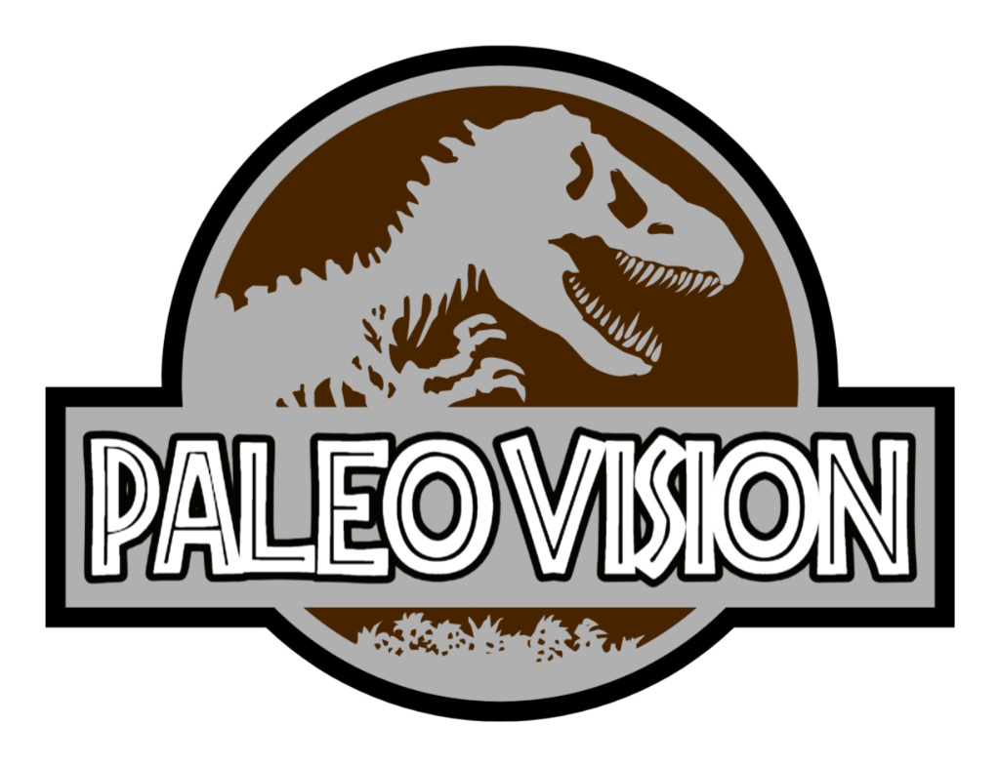
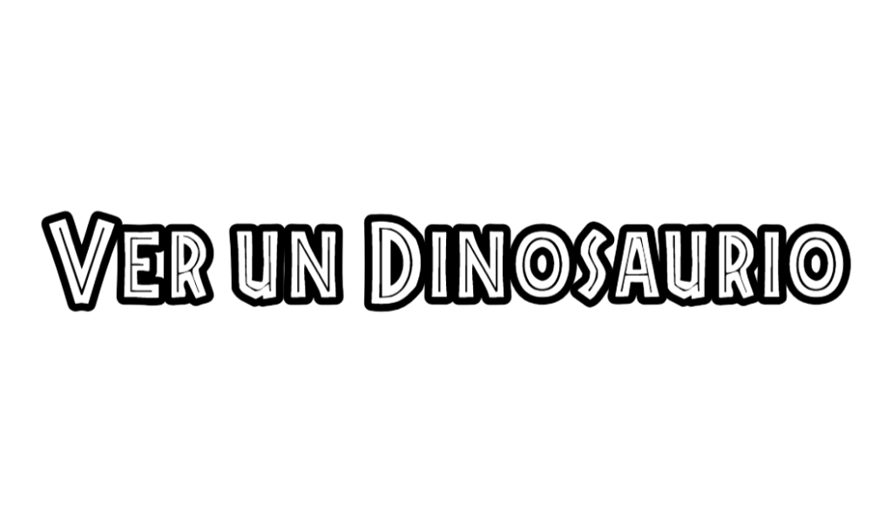

Proyecto IIC2026
Acerca de la herramienta
En PaleoVision, una herramienta de visualización creada a partir de los datos del dataset de
Kaggle,
con el fin de visualizar datos macro acerca de los dinosaurios y observar su diversificación taxonómica y geográfica
en los distintos lapsos de tiempo en los que existieron. Los datos fueron trabajados para una mejor modelación de las visualizaciones.
Se tienen dos visualizaciones:
- Un Grafo Taxonómico que muestra nodos representando valores de cada categoría (Superorder, Order, Suborder y Clade) y sus relaciones taxonómicas. Los nodos se colorean según el Order al que pertenecen, siendo [] para los Saurischian y [] para los Ornithiscian. El radio de cada nodo se relaciona con el número de dinosaurios que comparten dicha categoría taxonómica.
- Un mapa global interactivo que permite hacer zoom y hoover para ver detalles geográficos. El color de cada país indica el número de dinosaurios encontrados en esa ubicación. Al hacer clic en un país se filtran los dinosaurios encontrados en dicho país.
Dinosaurio
- Nombre científico:
- Vivió durante:
- Encontrado en:
- Dieta:
- Taxonomía:
- Tipo de Dinosaurio:
